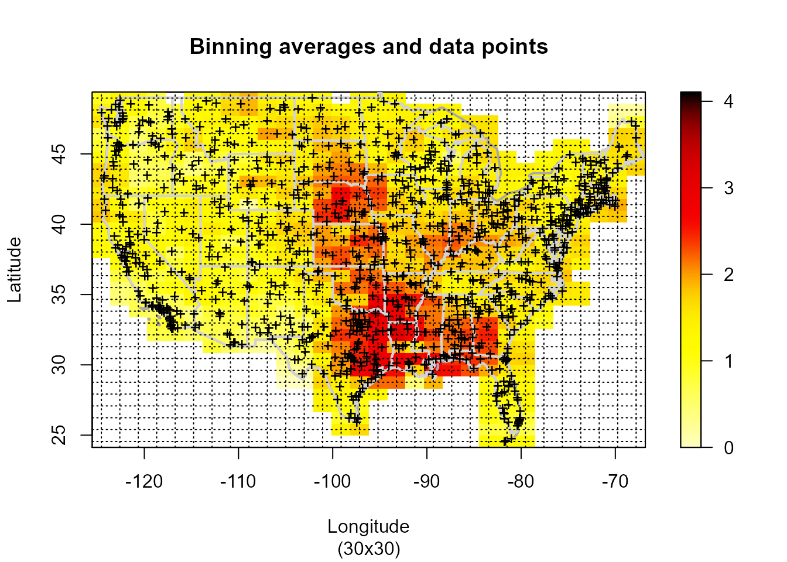
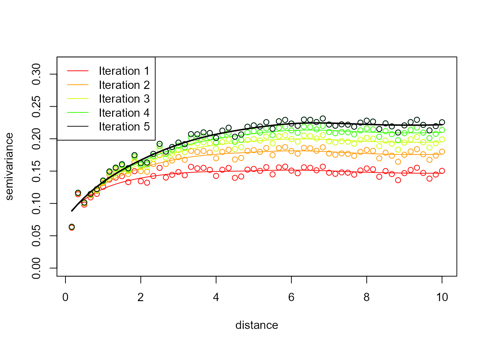

vignettes/docs/npsp2.Rmd
npsp2.RmdThis vignette (a working draft) tries to illustrate the use of the npsp package…
## Package npsp: Nonparametric Spatial Statistics,
## version 0.7-8 (built on 2021-05-10).
## Copyright (C) R. Fernandez-Casal 2012-2021.
## Type `help(npsp)` for an overview of the package or
## visit https://rubenfcasal.github.io/npsp.As an example, the precipitation data set will be considered (a SpatialPointsDataFrame object). It consists of total precipitations (rainfall inches) during March 2016 recorded over 1053 locations on the continental part of USA (available at https://www.ncdc.noaa.gov/cdo-web/datasets).
# Total Monthly Precipitation
spoints(precipitation)
n <- length(precipitation$y)
coord <- coordinates(precipitation)
attributes <- attributes(precipitation)
labels <- attributes$labels
border <- attributes$border
interior <- attributes$interior
slim <- range(precipitation$y)
col <- jet.colors(256)
col2 <- hot.colors(256)
cpu.time(reset=TRUE)## CPU time has been initialized.
y.summary <- summary(precipitation$y) # Resumen de datos
y.summary## Min. 1st Qu. Median Mean 3rd Qu. Max.
## 0.000 1.100 1.539 1.551 1.954 4.105
scattersplot(precipitation)
cpu.time(total = FALSE)## Time of last operation:
## user system elapsed
## 0.40 0.00 0.41np.fitgeo (automatically) fits an isotropic nonparametric geostatistical model by estimating the trend and the variogram (using a bias-corrected estimator) iteratively.
nbin <- c(30, 30)
geomod <- np.fitgeo(coord, precipitation$y, nbin = nbin, svm.resid = TRUE)
cpu.time(total = FALSE)## Time of last operation:
## user system elapsed
## 18.02 0.36 18.37Data mask (filtering):
spp.grid <- SpatialPoints(coords(geomod))
proj4string(spp.grid) <- proj4string(border) # CRS("+init=epsg:28992 +units=km")
mask.sp <- !is.na(over(spp.grid, as(border, 'SpatialPolygons')))
geomod <- mask(geomod, mask = mask.sp | (geomod$binw > 0))
cpu.time(total = FALSE)## Time of last operation:
## user system elapsed
## 0.09 0.01 0.11Plot final trend and variogram estimates:
plot(geomod, asp = 1)The algorithm is described below…
cpu.time(reset=TRUE)## CPU time has been initialized.## Time of last operation:
## user system elapsed
## 0.01 0.00 0.01
simage(bin, main = 'Binning averages and data points', slim = slim,
col = col2, xlab = labels$x[1], ylab = labels$x[2],
sub = paste0("(", paste(dim(bin), collapse = "x"), ")"))
plot(border, border = "darkgray", lwd = 2, add = TRUE)
plot(interior, border = "lightgray", lwd = 2, add = TRUE)
points(bin$data$x, pch ='+')
coordvs <- coordvalues(bin)
abline(v = coordvs[[1]], lty = 3)
abline(h = coordvs[[2]], lty = 3)
lp0.h <- h.cv(bin)$h
lp0.h # <- diag(c(6.85061, 2.946348)) ## [,1] [,2]
## [1,] 6.85061 0.000000
## [2,] 0.00000 2.946348
# Initial linear Local trend estimation
lp0 <- locpol(bin, h = lp0.h, hat.bin = TRUE)
cpu.time(total = FALSE)## Time of last operation:
## user system elapsed
## 0.49 0.02 0.50
simage(lp0, main = "Initial trend estimates", slim = slim,
col = col2, xlab = labels$x[1], ylab = labels$x[2])
plot(border, border = "darkgray", lwd = 2, add = TRUE)
plot(interior, border = "lightgray", lwd = 1, add = TRUE)
points(coord[,1], coord[,2], col="darkgray")
# Residuals
lp0.pred <- predict(lp0)
lp0.resid <- lp0$data$y - lp0.pred
lp0.r2 <- cor(lp0.pred, lp0$data$y)^2 # assuming independence...
old.par <- par(mfrow=c(1,2))
hist(lp0.resid)
plot(lp0.pred, lp0.resid, main = "Residuals vs Fitted",
sub = paste("R^2 =", round(lp0.r2, 2)),
xlab = "Fitted values", ylab = "Residuals")
abline(h = 0, lty = 2, col = "darkgray")
par(old.par)
# rule.svar(coord)
nlags <- 60
maxlag <- 10
# Empirical variogram with linear binning:
svar.bin <- svariso(coord, lp0.resid, nlags = nlags, maxlag = maxlag)
sv.lags <- coords(svar.bin)
svar.np.h <- h.cv(svar.bin)$h
# Local linear variogram estimation
svar.np <- np.svar(svar.bin, h = svar.np.h) # biased
# Fitted Shapiro-Botha variogram model
svm0 <- fitsvar.sb.iso(svar.np, dk = 0)
# Bias-corrected variogram estimation
svar.np2 <- np.svariso.corr(lp0, nlags = nlags, maxlag = maxlag,
h=svar.np.h, plot = TRUE) 
## Iteration 2 : 1
## Iteration 3 : 0.07754415
## Iteration 4 : 0.0530029
## Iteration 5 : 0.03988535
# Fitted Shapiro-Botha variogram model
svm02 <- fitsvar.sb.iso(svar.np2, dk = 0)
cpu.time(total = FALSE)## Time of last operation:
## user system elapsed
## 9.26 0.11 9.40
plot(svm02, main = "Nonparametric bias-corrected semivariogram\nand fitted models",
legend = FALSE, xlim = c(0,max(coords(svar.np2))),
ylim = c(0,max(svar.np2$biny, na.rm = TRUE)))
plot(svm0, add = TRUE)
plot(svar.np, type = "p", pch = 2, add = TRUE)
abline(h = c(svm02$nugget, svm02$sill), lty = 3)
abline(v = 0, lty = 3)
legend("bottomright", legend = c("corrected", 'biased'),
lty = c(1, 1), pch = c(NA, NA), lwd = c(2, 1))
# GCV criterion (Francisco-Fernandez and Opsomer, 2005)
lp.h <- h.cv(bin, objective = "GCV", cov = svm02, DEalgorithm = FALSE)$h
lp.h # <- diag(c(11.11463, 18.59536))## [,1] [,2]
## [1,] 11.11399 0.0000
## [2,] 0.00000 18.6437
cpu.time(total = FALSE)## Time of last operation:
## user system elapsed
## 1.41 0.28 1.68
# lp.h <- hcv.data(bin, objective = "GCV", cov = svm02, DEalgorithm = FALSE)$h
# lp.h # <- diag(c(10.0871, 18.3956))
## Time of last operation: hcv.data
## user system elapsed
## 10.39 1.39 11.87Final trend (low resolution):
## Time of last operation:
## user system elapsed
## 0.19 0.00 0.19
simage(lp, main = "Trend Estimation", slim = slim,
xlab = labels$x[1], ylab = labels$x[2], col = col2)
plot(border, border = "darkgray", lwd = 2, add = TRUE)
plot(interior, border = "lightgray", lwd = 1, add = TRUE)
# spoints(coord[,1], coord[,2], precipitation$y, add = TRUE)
# New Residuals
lp.pred <- predict(lp)
lp.resid <- lp$data$y - lp.pred
lp.r2 <- cor(lp.pred, lp$data$y)^2 # assuming independence...
old.par <- par(mfrow=c(1,2))
hist(lp.resid)
plot(lp.pred, lp.resid, main = "Residuals vs Fitted",
sub = paste("R^2 =", round(lp0.r2, 2)),
xlab = "Fitted values", ylab = "Residuals")
abline(h = 0, lty = 2, col = "darkgray")
par(old.par)
svar.bin <- svariso(coord, lp.resid, nlags = nlags, maxlag = maxlag)
svar.np.h <- h.cv(svar.bin)$h # svar.np.h <- 2.257358
svar.np <- np.svar(svar.bin, h = svar.np.h)
svm <- fitsvar.sb.iso(svar.np, dk = 0)
svar.np2 <- np.svariso.corr(lp, nlags = nlags, maxlag = maxlag,
h = svar.np.h, plot = TRUE, ylim = c(0, 0.3))## Iteration 2 : 1
## Iteration 3 : 0.02763527Final variogram:
svm2 <- fitsvar.sb.iso(svar.np2, dk = 0) # Shapiro-Botha model
cpu.time(total = FALSE)## Time of last operation:
## user system elapsed
## 5.03 0.09 5.14
plot(svm2, main = "Nonparametric bias-corrected semivariogram\nand fitted models",
legend = FALSE)
plot(svm, add = TRUE)
plot(svar.np, type = "p", pch = 2, add = TRUE)
abline(h = c(svm2$nugget, svm2$sill), lty = 3)
abline(v = 0, lty = 3)
plot(svm0, lty = 2, lwd = 1, add = TRUE)
plot(svm02, lty = 2, lwd = 2, add = TRUE)
legend("bottomright", legend = c("corrected", 'biased', "corrected initial",
'biased initial'), lty = c(1, 1, 2, 2), pch = c(1, 2, NA, NA),
lwd = c(2, 1))
cpu.time(total = FALSE)## Time of last operation:
## user system elapsed
## 0.02 0.00 0.02High resolution binning (120x120):
bin.hd <- binning(coord, precipitation$y,
nbin = c(120,120), set.NA = TRUE)
simage(bin.hd, main = 'Binning averages',
xlab = labels$x[1], ylab = labels$x[2],
sub = paste0("(", paste(dim(bin.hd), collapse = "x"), ")"),
slim = slim)
plot(border, border = "darkgray", lwd = 2, add = TRUE)
plot(interior, border = "lightgray", lwd = 1, add = TRUE)Data mask (filtering):
spp.grid <- SpatialPoints(coords(bin.hd))
proj4string(spp.grid) <- proj4string(border) # CRS("+init=epsg:28992 +units=km")
mask.sp <- !is.na(over(spp.grid, as(border, 'SpatialPolygons')))
mask <- mask.sp | (bin.hd$binw > 0) # to avoid filtering data...
bin.hd <- mask(bin.hd, mask = mask)Final trend (high resolution):
lp.hd <- locpol(bin.hd, h = lp.h)
simage(lp.hd, main = "Final trend estimates", slim = slim,
xlab = labels$x[1], ylab = labels$x[2], col = col2)
plot(border, border = "darkgray", lwd = 2, add = TRUE)
plot(interior, border = "lightgray", lwd = 1, add = TRUE)
cpu.time(total = FALSE)## Time of last operation:
## user system elapsed
## 1.85 0.02 1.90
krig.grid <- np.kriging(lp.hd, svm2)## Warning in np.kriging.default(lp.hd, svm2): A resized 'object' can not be masked
## (`ngrid != object$grid$n`).
cpu.time(total = FALSE)## Time of last operation:
## user system elapsed
## 16.30 0.12 16.46
simage(krig.grid, 'kpred', main = 'Kriging predictions', slim = slim,
xlab = labels$x[1], ylab = labels$x[2])
plot(border, border = "darkgray", lwd = 2, add = TRUE)
plot(interior, border = "lightgray", lwd = 1, add = TRUE)
simage(krig.grid, 'ksd', main = 'Kriging sd',
xlab = labels$x[1], ylab = labels$x[2], col = col2)
plot(border, border = "darkgray", lwd = 2, add = TRUE)
plot(interior, border = "lightgray", lwd = 1, add = TRUE)
cpu.time()## Time of last operation:
## user system elapsed
## 0.42 0.02 0.45
## Total time:
## user system elapsed
## 34.98 0.66 35.75
# save.image(".RData")